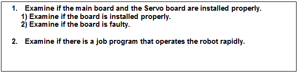
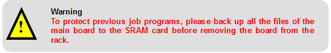
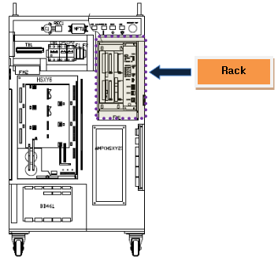

1.1.25.1. Outline
This error may occur due to a communication error between the main board and the Servo board, or a rapid change of motion. When a communication error occurs, a valid command cannot be transferred from the main board to the Servo board, so this error will occur and immobilize the robot to prevent the robot’s abnormal operation based on an invalid command.
Moreover, this error will occur and immobilize the robot because the drive unit may not follow the rapid changes of the motion command.
1.1.25.2. Causes and checking methods

1. Examine if the main board and the Servo board are installed properly.
This error may be caused by a communication problem if the main board and the Servo board is not installed properly on a rack or the board has an error.

1) Examine if the board is installed properly.
Please remove the main board and the Servo board from the rack, and re-install them again.

Figure 5.65 Location of the rack inside the controller
2) Examine if the board is faulty.
To examine if the board is faulty, please replace it with a new one.
2. Examine if there is a job program that operates the robot rapidly.
Please check if the error occurs at the point where the robot’s motion changes rapidly. If the error occurs during the rapid motion, modification of the job program is required.
The reason that this error occurs during the rapid motion is as follows. During the execution of the job program, the robot’s position may be twisted to move a short distance. At that point, the speed of the robot’s axis suddenly increases, and an error may occur if the Servo board follows the movement. To resolve this, please modify the teaching point of the location (where the position changes rapidly) or make changes on the position of the robot.